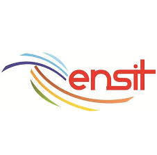
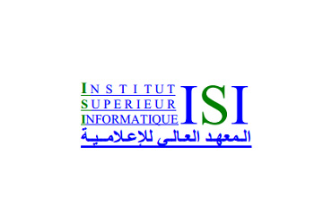

About Me
"The secret of getting ahead is getting started." — Mark Twain
I am a DevSecOps and Cloud Engineer with 5+ years of experience in software engineering, infrastructure automation, and security-focused delivery. I work at the intersection of cloud platforms, secure CI/CD pipelines, and intelligent systems.
Currently, I am deepening my research direction toward cybersecurity, AI/ML systems, and intelligent cloud infrastructure, with the goal of pursuing PhD opportunities in these areas.
Based in Tunisia, open to remote research collaborations and consulting engagements worldwide.


Education
M.Sc. Network & Systems Security
Private Higher School of Technologies and Engineering — Tunisia
M.Sc. Applied Mathematics & Data Science
National School of Engineering of Tunis — Tunisia
M.Sc. Software Engineering
Higher Institute of Computer Science — Tunisia
B.Sc. Systems Development
Aeronautical Specialty School — Tunisia
B.Sc. Computer Science Fundamentals
Higher Institute of Computer Science — Tunisia
Experience
DevSecOps Engineer — Freelance / Self-Employed
Mar 2026 – Present
Building a cloud-native DevSecOps platform for quantitative strategy deployment.
Designing secure CI/CD pipelines with GitHub Actions and GitOps workflows via Argo CD,
with Kubernetes and Terraform on AWS, and monitoring through Prometheus and Grafana.
DevOps Engineer — Ministry of National Defense of Tunisia
Sep 2023 – Dec 2025
Designed and maintained CI/CD pipelines and provisioned AWS infrastructure with Terraform.
Containerized applications with Docker using multi-stage builds, increasing deployment
frequency by 40% and reducing manual operational overhead through infrastructure automation.
Software Engineer — Ministry of National Defense of Tunisia
Mar 2021 – Sep 2023
Developed full-stack applications with FastAPI and React.js, and supported legacy Java systems
in a high-security environment. Optimized Oracle database queries and indexing strategies,
improving application response times by up to 30%.
Technical Support Engineer — Ministry of National Defense of Tunisia
Jul 2020 – Mar 2021
Administered Windows Server and Linux environments for mission-critical systems. Maintained
over 99.9% system availability through proactive monitoring and timely incident remediation.
Research Interests
Cybersecurity & Secure Systems Engineering
Security of distributed systems, zero-trust architectures, secure software delivery pipelines,
and policy-as-code enforcement in cloud environments.
AI Security & Adversarial Machine Learning
Robustness of machine learning models against adversarial inputs, security of LLM-based systems,
and detection of malicious behavior in AI-integrated applications.
MLOps & Intelligent Infrastructure
Secure and reproducible ML lifecycle management, model governance, automated validation gates,
and deployment of AI systems on cloud-native infrastructure.
Distributed Systems & Cloud-Native Architecture
Reliability, observability, and scalability of distributed systems; container orchestration;
and cross-layer monitoring combining infrastructure telemetry with application-level signals.
Autonomous Systems & Edge Intelligence
Multi-sensor perception and navigation for autonomous mobile robots, simulation-to-deployment
workflows, and deployment of AI inference on edge hardware.
Contact
Tunisia — open to remote worldwide